Ürün kategorileri
Kompresörlerden oto servis ekipmanlarına kadar tüm ürün gruplarımızı kategori kategori inceleyebilir, her model için ayrı teknik özellik sayfalarına ulaşabilirsiniz.
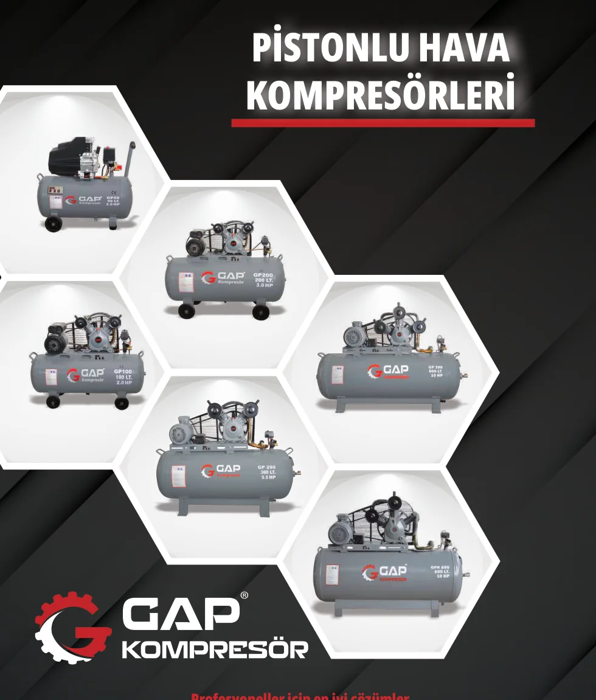
Pistonlu Hava Kompresörleri
GP serisi yağlı pistonlu hava kompresörleri; farklı depo hacmi ve güç seçenekleriyle atölye ve sanayi kullanımına uygundur.
10 ürün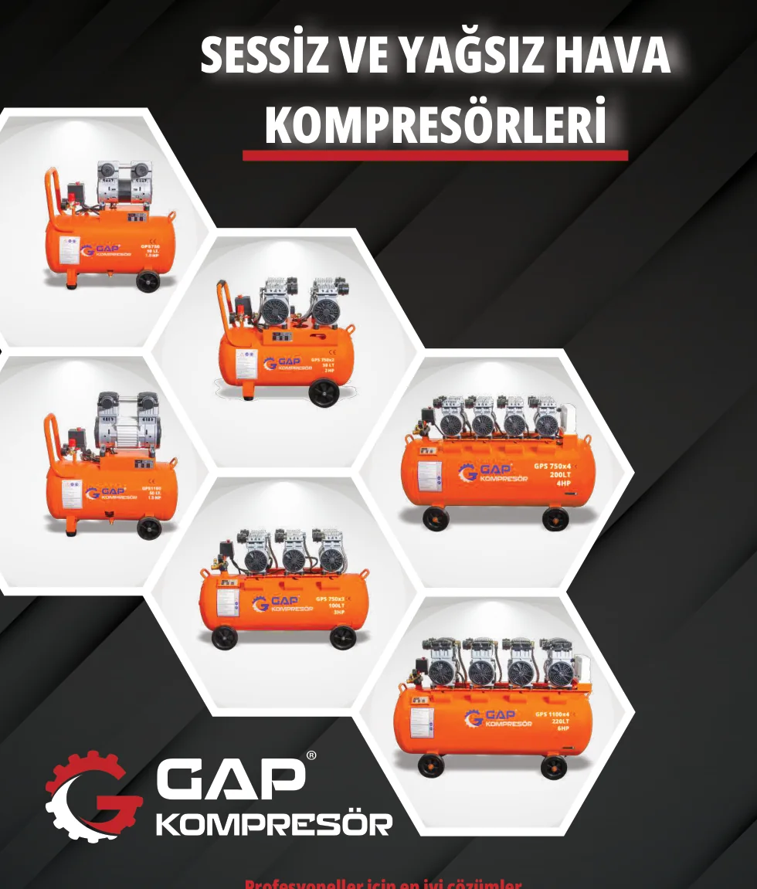
Sessiz ve Yağsız Hava Kompresörleri
GPS serisi sessiz ve yağsız hava kompresörleri; temiz hava gerektiren uygulamalar için idealdir.
9 ürün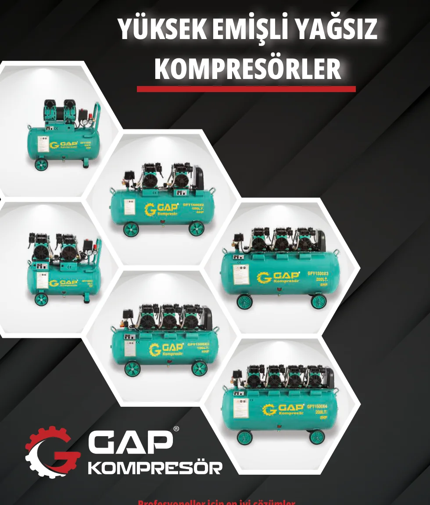
Yüksek Emişli Yağsız Kompresörler
GPY serisi yüksek emişli yağsız kompresörler; yüksek debi ve verimli çalışma sunar.
8 ürün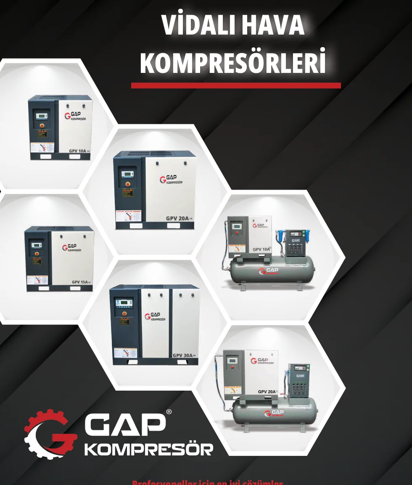
Vidalı Hava Kompresörleri
GPV serisi vidalı, invertörlü ve depo üstü kompresör sistemleri.
36 ürün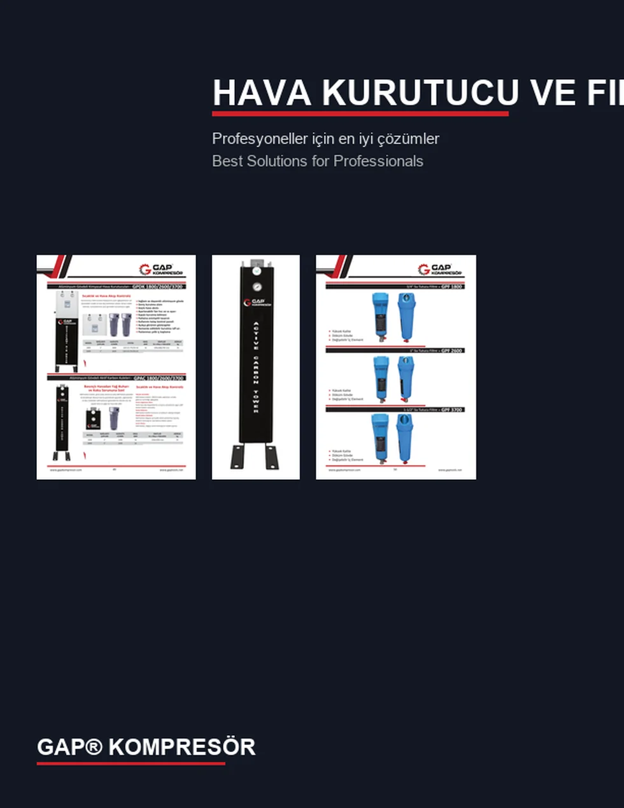
Hava Kurutucu ve Filtreler
Hava kurutucular, su tutucu filtreler, kimyasal kurutucu ve aktif karbon kuleleri.
5 ürün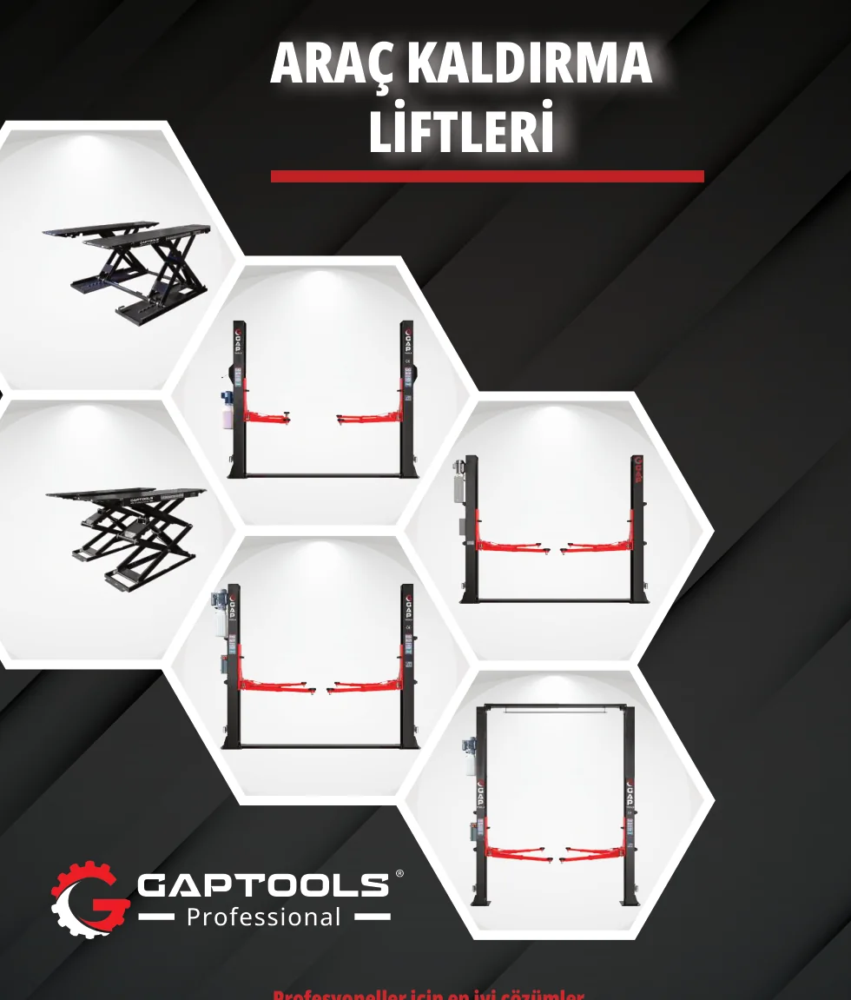
Araç Kaldırma Liftleri
İki sütunlu liftler, makaslı liftler ve oto servis kaldırma sistemleri.
7 ürün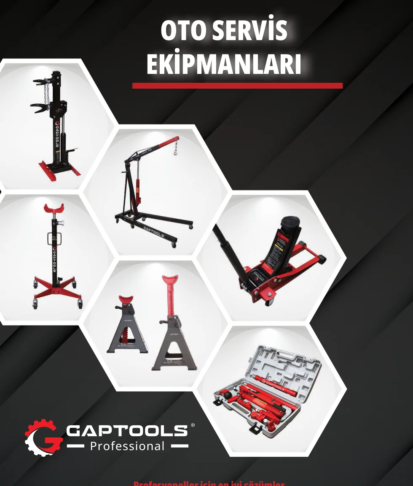
Oto Servis Ekipmanları
Katlanır vinç, garaj krikosu, motor standı, şanzıman krikosu, pres ve servis aparatları.
12 ürün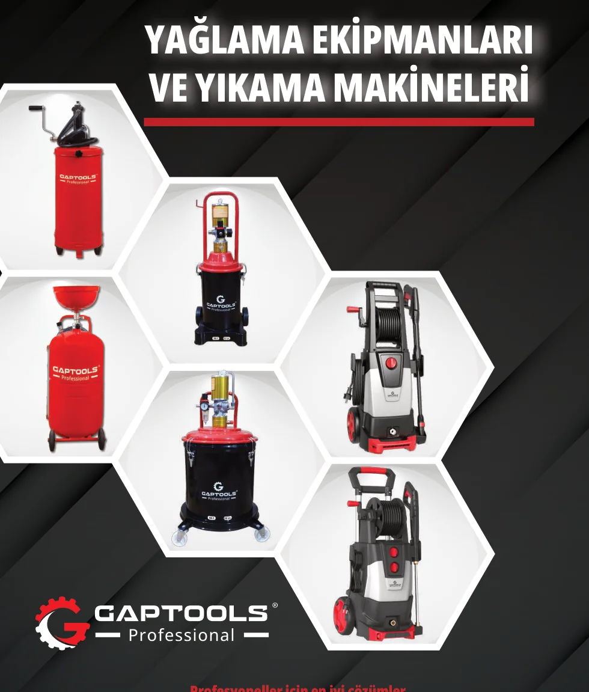
Yağlama Ekipmanları ve Yıkama Makineleri
Gres pompaları, yağ boşaltma üniteleri ve basınçlı yıkama makineleri.
10 ürün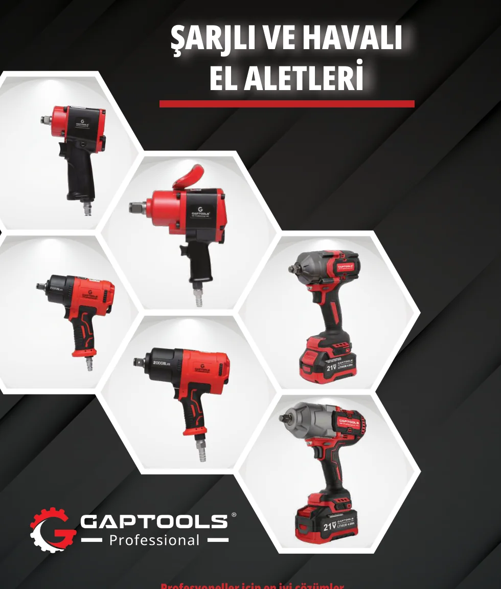
Şarjlı ve Havalı El Aletleri
Darbeli somun sökme, cırcır, zımpara, hava tabancası ve şarjlı el aletleri.
9 ürün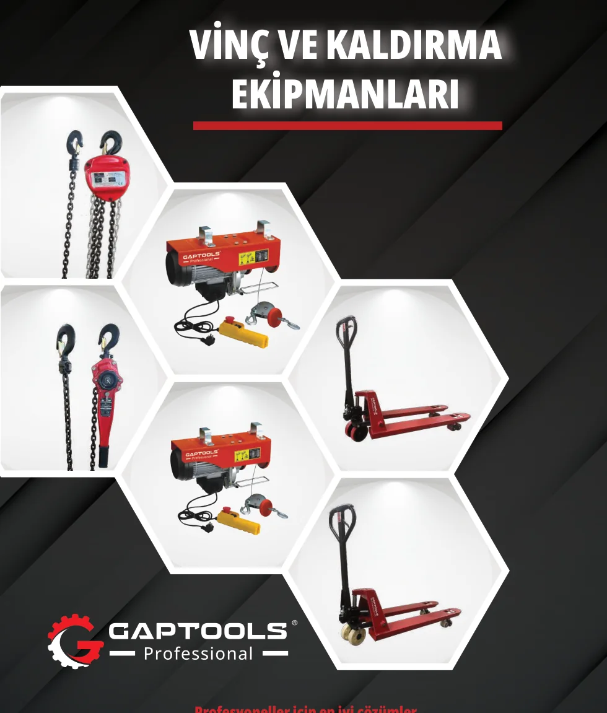
Vinç ve Kaldırma Ekipmanları
Elektrikli vinç, caraskal, hubzug ve transpalet modelleri.
10 ürün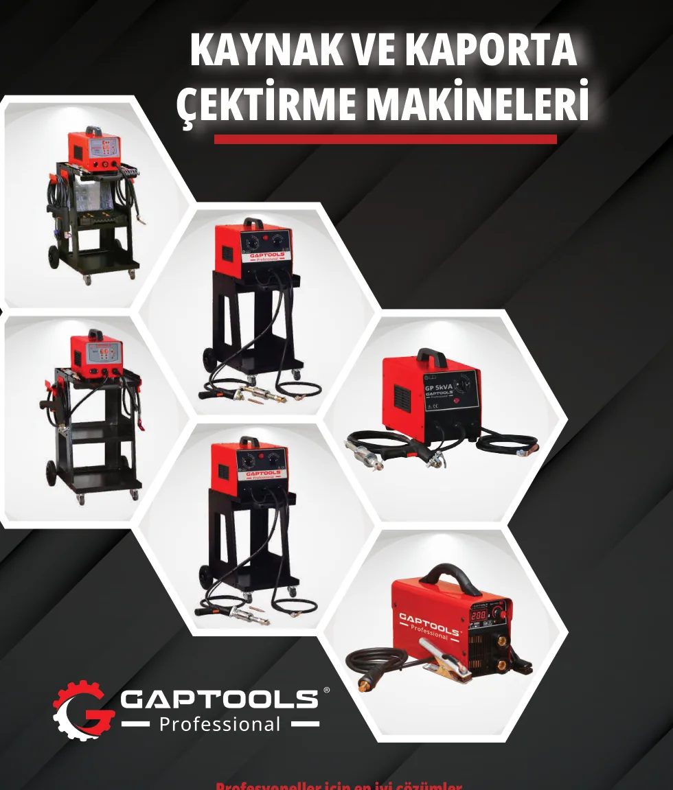
Kaynak ve Kaporta Çektirme Makineleri
İnvertörlü kaynak makineleri, kaporta çektirme üniteleri ve göçük düzeltme aparatları.
9 ürün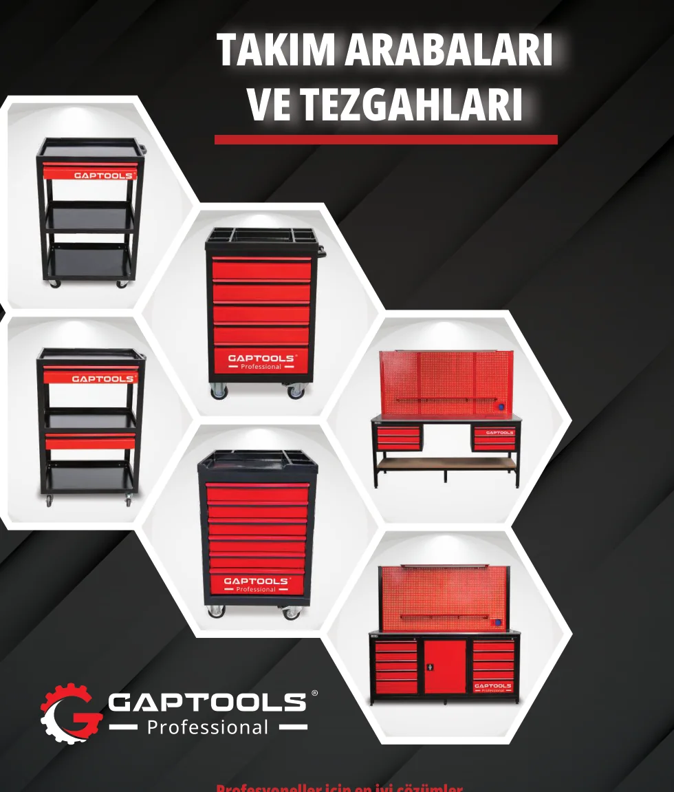
Takım Arabaları ve Tezgahları
Çekmeceli takım arabaları ve endüstriyel çalışma tezgahları.
7 ürün